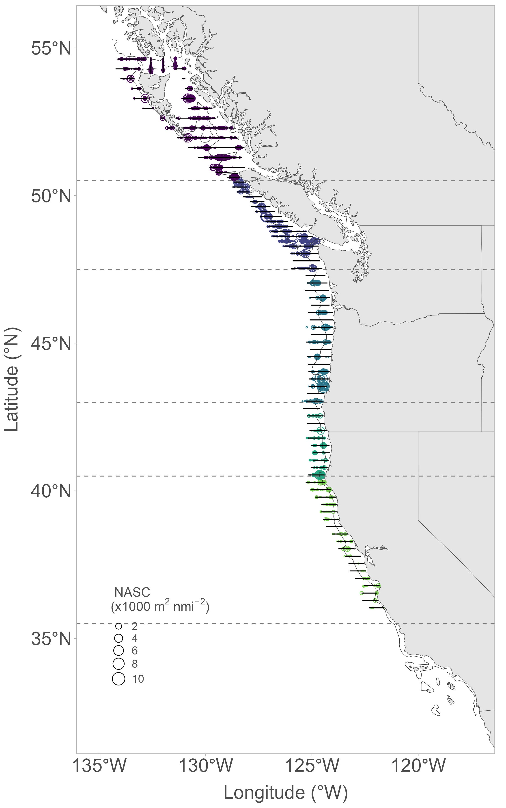

Krill were quantified using acoustic backscatter data during the inaugural Integrated West Coast Pelagics Survey and the Canadian Ecosystem and Pacific Hake Trawl Survey, conducted June-September 2025 from Point Conception to northern British Columbia. The nautical area scattering coefficient (NASC), which represents relative krill abundance between 50-300 m depth, indicated that krill abundance increased in 2025 compared with the past two survey years (2021 and 2023), particularly in the Northern CCE, though krill abundance was not anomalously high. Most krill were located near the 200-m shelf break off Oregon, Washington, and British Columbia (Columbia, Vancouver and Charlotte regions), with less krill observed off California.

The relative abundance, or NASC (scaled circles, x1000 m^2^ nmi^–2^), of krill detected acoustically during the 2025 Integrated West Coast Pelagics Survey, conducted between June-September 2025. Black lines represent survey transects. Krill abundance estimates derived from NOAA’s 2025 Integrated West Coast Pelagics survey hydroacoustic data; provided by E. Phillips, NMFS/NWFSC.